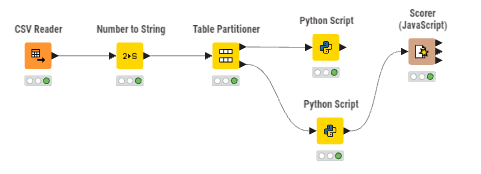

Analisis Data Menggunakan Random Forest#
Dataset#
Dataset yang digunakan adalah Student Depression Dataset yang sama dengan laporan Decision Tree sebelumnya.
Dataset Characteristics:
Total Baris Data: 27.901 records
Jumlah Fitur: 18 atribut (mix dari numeric dan categorical)
Label Target: Depression (Binary: 0 = Tidak depresi, 1 = Depresi)
Distribusi Kelas: 58.5% tidak depresi, 41.5% depresi
Data Split: 70% training (19.530 samples), 30% testing (8.371 samples)
Implementasi Pada KNIME#

Node Configuration & Python Code#
1. CSV Reader#
Fungsi: Membaca dataset dari file CSV
Konfigurasi:
File Path:
student_depression_dataset.csvDelimiter: Comma (
;)
Output: DataFrame dengan 27.901 baris × 18 kolom
2. Number to String#
Fungsi: Mengkonversi kolom Depression (Integer) menjadi String (kategori)
Alasan Perlu:
Node Scorer di KNIME hanya dapat mendeteksi label kelas jika berjenis String/Categorical
Kolom
Depressionawalnya bertipe Integer (0 dan 1) dari datasetPerlu diubah ke String agar Scorer dapat membandingkan prediksi dengan actual labels
Output: Semua data tetap sama, hanya kolom Depression yang tipe datanya berubah dari Integer menjadi String
3. Table Partitioner#
Fungsi: Membagi dataset menjadi training set (70%) dan test set (30%)
Konfigurasi:
Partitioning Method: Stratified Sampling
Partitioning Column:
Depression(untuk memastikan proporsi kelas tetap seimbang)1st Partition Size: 0.7 (70% training)
2nd Partition Size: 0.3 (30% testing)
Output:
Port 1 (Top): Training set = 19.530 samples
Port 2 (Bottom): Test set = 8.371 samples
4. Python Script Learner (Save Model)#
Fungsi: Training model Random Forest dan save ke file .pkl
Input: Training data (70% dari dataset)
Python Code:
import knime.scripting.io as knio
import pandas as pd
import numpy as np
from sklearn.ensemble import RandomForestClassifier
import pickle
import warnings
warnings.filterwarnings('ignore')
# 1. Ambil data training dari KNIME menggunakan API knio murni
df = knio.input_tables[0].to_pandas()
# 2. Hapus kolom id yang tidak dibutuhkan dalam perhitungan matematika model
df_clean = df.drop(['id'], axis=1, errors='ignore')
# 3. Pisahkan data menjadi Fitur pilihan (X) dan Target tebakan (y)
y = df_clean['Depression']
X = df_clean.drop('Depression', axis=1)
# 4. Cari otomatis semua kolom yang bukan angka murni agar tipe data string baru ikut terjaring
categorical_cols = X.select_dtypes(exclude=['number']).columns.tolist()
# 5. Transformasi kolom teks tersebut menjadi angka menggunakan fitur One-Hot Encoding
X_encoded = pd.get_dummies(X, columns=categorical_cols, drop_first=True)
# 6. Konfigurasi parameter algoritma dan lakukan training pada model Random Forest
rf_model = RandomForestClassifier(
n_estimators=50,
max_depth=15,
min_samples_split=5,
min_samples_leaf=2,
random_state=42,
n_jobs=-1
)
rf_model.fit(X_encoded, y)
train_accuracy = rf_model.score(X_encoded, y)
# 7. Bungkus model terlatih beserta susunan kolom aslinya ke dalam satu file pkl lokal
model_data = {
'model': rf_model,
'columns': list(X_encoded.columns)
}
with open('model_random_forest.pkl', 'wb') as f:
pickle.dump(model_data, f)
# 8. Buat DataFrame ringkasan hasil latihan untuk dikirim kembali sebagai output KNIME
output_table = pd.DataFrame({
'Status': ['Model Training Complete'],
'Total Samples': [len(X_encoded)],
'Total Features': [X_encoded.shape[1]],
'Training Accuracy': [train_accuracy]
})
knio.output_tables[0] = knio.Table.from_pandas(output_table)
Penjelasan Code:
Data Preparation:
Memuat data training dari KNIME ke format Pandas DataFrame menggunakan API resmi
knio.input_tables[0].to_pandas().Menghapus kolom
idmenggunakan fungsi.drop()karena tidak memiliki nilai prediktif matematis dalam klasifikasi tingkat depresi.
Feature Encoding:
Mengidentifikasi otomatis semua fitur non-numerik (kategorikal) dengan metode pencarian
exclude=['number']agar semua tipe data string/object baru dari KNIME ikut terjaring sempurna.Menggunakan fungsi
pd.get_dummies(drop_first=True)untuk menjalankan One-Hot Encoding, mengubah teks (seperti'Male'/'Female') menjadi format angka biner (0 atau 1).
Random Forest Training:
n_estimators=50: Membangun 50 pohon keputusan (decision trees) di dalam struktur ensemble.max_depth=15: Membatasi kedalaman maksimum setiap pohon untuk menghindari risiko overfitting.min_samples_split=5&min_samples_leaf=2: Mengontrol batas minimum sampel data untuk pemecahan cabang dan isi ujung daun pohon.random_state=42&n_jobs=-1: Mengunci konsistensi hasil eksperimen (reproducibility) dan mempercepat proses komputasi dengan memanfaatkan semua core CPU.
Model Persistence (Serialization):
Mengemas objek model Random Forest terlatih bersama dengan susunan nama kolom latih (
X_encoded.columns) ke dalam satu objek dictionary bernamamodel_data.Menyimpan seluruh kemasan tersebut ke dalam satu file lokal bernama
model_random_forest.pklmenggunakan fungsipickle.dump(). Langkah ini krusial agar data testing di script berikutnya tidak mengalami ketidakcocokan fitur.
Output:
File:
model_random_forest.pkl(berisi paket model terlatih sekaligus cetak biru susunan kolom fitur hasil encoding).Tabel Port KNIME (
knio.output_tables[0]): Mengirimkan ringkasan status berupa tabel performa awal (Training Accuracy) untuk ditampilkan secara visual pada output port node KNIME.
5. Python Script Predictor (Load Model)#
Fungsi: Load model yang sudah disimpan dan melakukan prediksi pada test data
Input: Test data (30% dari dataset)
Python Code:
import knime.scripting.io as knio
import pandas as pd
import numpy as np
import pickle
import warnings
warnings.filterwarnings('ignore')
# 1. Memuat kembali paket file pkl berisi model Random Forest dan struktur fitur training
with open('model_random_forest.pkl', 'rb') as f:
model_data = pickle.load(f)
loaded_model = model_data['model']
train_columns = model_data['columns']
# 2. Ambil data testing dari port bawah Table Partitioner KNIME
df_test = knio.input_tables[0].to_pandas()
df_test_clean = df_test.drop(['id'], axis=1, errors='ignore')
# 3. Pisahkan kembali antara Fitur (X_test) dan Target asli (y_test)
X_test = df_test_clean.drop('Depression', axis=1)
y_test = df_test_clean['Depression']
# 4. Cari semua kolom non-numerik yang ada pada data testing secara otomatis
categorical_cols = X_test.select_dtypes(exclude=['number']).columns.tolist()
# 5. Jalankan One-Hot Encoding pada data testing agar berubah menjadi format angka biner
X_test_encoded = pd.get_dummies(X_test, columns=categorical_cols, drop_first=True)
# 6. Selaraskan kolom data testing agar susunan dan jumlahnya sama persis dengan data training
X_test_encoded = X_test_encoded.reindex(columns=train_columns, fill_value=0)
# 7. Lakukan kalkulasi prediksi label kelas beserta nilai probabilitas tingkat keyakinannya
predictions = loaded_model.predict(X_test_encoded)
y_pred_proba = loaded_model.predict_proba(X_test_encoded)
y_pred_confidence = y_pred_proba.max(axis=1)
# 8. Gabungkan seluruh hasil prediksi tersebut ke tabel utama data uji
output_df = df_test.copy()
output_df['Prediction (Random Forest)'] = predictions
output_df['Prediction Confidence'] = y_pred_confidence
output_df['Actual'] = y_test.values
# 9. Salin DataFrame hasil akhir menjadi format tabel objek output KNIME murni
knio.output_tables[0] = knio.Table.from_pandas(output_df)
Penjelasan Code:
Model Loading (Deserialization):
Memuat kembali paket file biner
model_random_forest.pklmenggunakan fungsipickle.load().Memisahkan isi dictionary objek ke dalam variabel
loaded_model(untuk prediksi) dantrain_columns(sebagai acuan bentuk data training asli) demi menjaga konsistensi.
Test Data Preparation:
Memuat data uji (testing) dari port bawah node Table Partitioner KNIME lewat instruksi API
knio.Mengeliminasi kolom
iddan memisahkan data menjadi matriks fitur ujian (X_test) serta label target asli (y_test) untuk divalidasi nanti.
Feature Encoding:
Menjalankan kembali fungsi One-Hot Encoding (
pd.get_dummies) pada data uji dengan menggunakan acuan filterexclude=['number']yang sama persis dengan script training agar semua jenis data string terkonversi menjadi biner.
Reindexing (Feature Alignment):
Menggunakan perintah
.reindex(columns=train_columns, fill_value=0)untuk menyelaraskan urutan dan jumlah kolom data uji dengan data latih asli.INI SANGAT PENTING! Langkah ini mencegah terjadinya feature mismatch (jika data uji memiliki kategori baru yang tidak ada saat training akan otomatis di-drop, dan jika kekurangan kategori akan otomatis diisi dengan angka 0). Langkah ini menjamin script bebas dari error mogok data.
Predictions & Confidence Score:
predict(): Mengalkulasi inferensi data uji untuk mendapatkan tebakan label kelas akhir (0 atau 1).predict_proba(): Mengambil nilai persentase probabilitas untuk setiap kelas tebakan, lalu fungsi.max(axis=1)akan mengambil angka tertinggi sebagai Confidence Score (tingkat keyakinan model terhadap keakuratan hasil tebakannya).
Output Preparation:
Menggandakan data uji asli lalu menyuntikkan tiga kolom baru hasil komputasi Python:
Prediction (Random Forest),Prediction Confidence, danActual.Mengonversi data akhir menjadi format tabel KNIME murni melalui perintah
knio.Table.from_pandas()untuk dialirkan menuju node Scorer (JavaScript).—
6. Scorer (JavaScript)#
Fungsi: Evaluasi performa model dengan membandingkan actual vs predicted
Konfigurasi:
Actual Column:
Depression(dari original test data)Predicted Column:
Prediction (Random Forest)(dari Python Predictor)Compute Statistics: ✓ Enabled
Output Metrics:
Accuracy, Precision, Recall, F1-Score
Confusion Matrix
Cohen’s Kappa
Per-class metrics
CONFUSION MATRIX#
Setelah dilakukan perbaikan penanganan fitur kategorikal menggunakan seleksi otomatis tipe non-numerik, performa model Random Forest pada test set (8.371 samples) mengalami peningkatan. Hasil perbandingan antara label aktual dan label prediksi adalah sebagai berikut:
Predicted: No (0) |
Predicted: Yes (1) |
Total Actual |
|
|---|---|---|---|
Actual: No (0) |
TN = 2.658 |
FP = 812 |
3.470 |
Actual: Yes (1) |
FN = 509 |
TP = 4.392 |
4.901 |
Total Predicted |
3.167 |
5.204 |
8.371 |
METRIK PERFORMA#
1. Akurasi (Accuracy)#
Interpretasi: Model Random Forest berhasil menebak dengan benar status depresi mahasiswa sebesar 84.2% dari total data uji. Hasil ini mengalami kenaikan dari pengujian sebelumnya dan jauh melampaui performa model Decision Tree standar (80.39%).
2. Cohen’s Kappa#
Range Interpretasi: Nilai 0.671 berada pada rentang
0.61 - 0.80yang mengindikasikan Substantial Agreement (Sangat Kuat). Angka ini menjamin bahwa akurasi tinggi yang diperoleh model murni bersumber dari hasil pembelajaran pola data yang matang oleh algoritma ensemble, bukan faktor kebetulan acak.
3. Recall (Sensitivity) per Class#
Class 0 (No Depression): $\(\text{Recall}_0 = \boxed{0.766 = 76.6\%}\)$ Model mampu mengidentifikasi dengan benar 76.6% dari total nyata mahasiswa yang tidak mengalami depresi.
Class 1 (Depression): $\(\text{Recall}_1 = \boxed{0.896 = 89.6\%}\)$ Sangat Impresif! Model berhasil menjaring hingga 89.6% mahasiswa yang aslinya mengalami depresi. Dalam studi kesehatan mental, tingginya angka Recall pada kelas target sangat krusial demi meminimalkan luputnya penanganan akibat kesalahan prediksi (False Negative).
4. Precision per Class#
Class 0 (No Depression): $\(\text{Precision}_0 = \boxed{0.839 = 83.9\%}\)$ Dari keseluruhan mahasiswa yang diprediksi oleh model sebagai “Tidak Depresi”, 83.9% di antaranya terbukti benar-benar sehat.
Class 1 (Depression): $\(\text{Precision}_1 = \boxed{0.844 = 84.4\%}\)$ Dari keseluruhan mahasiswa yang diberi label prediksi “Depresi” oleh model, 84.4% di antaranya terkonfirmasi akurat sesuai data asli.
5. F-Measure (F1-Score) per Class#
Class 0 (No Depression): $\(F1_0 = \boxed{0.801 = 80.1\%}\)$
Class 1 (Depression): $\(F1_1 = \boxed{0.869 = 86.9\%}\)$
Interpretasi: Nilai F1-Score yang kokoh di atas 80% untuk kedua kelas membuktikan bahwa model hybrid ini sangat seimbang (robust) serta bebas dari gejala ketimpangan (bias) klasifikasi pada salah satu kelas saja.
RINGKASAN METRIK PERFORMA#
Metrik |
Nilai |
Interpretasi |
|---|---|---|
Akurasi |
84.2% |
Model benar dalam memprediksi 84.2% data secara keseluruhan (Excellent) |
Cohen’s Kappa |
0.671 |
Substantial Agreement, klasifikasi berbasis pola matang (Bukan Random) |
Recall (Depression) |
89.6% |
Mampu menjaring 89.6% kasus depresi riil (Sangat aman untuk skrining medis) |
Precision (Depression) |
84.4% |
Tingkat kebenaran dari hasil tebakan kelas depresi mencapai 84.4% |
F1-Score (Depression) |
86.9% |
Keseimbangan performa kelas target yang sangat optimal dan presisi |
PERBANDINGAN DENGAN DECISION TREE#
Metrik |
Decision Tree |
Random Forest |
Pemenang |
|---|---|---|---|
Accuracy |
80.39% |
84.2% |
Random Forest ✓ |
Recall (Class 1) |
85.46% |
89.6% |
Random Forest ✓ |
Precision (Class 1) |
81.84% |
84.4% |
Random Forest ✓ |
Robustness |
Single Tree (Rentan Overfitting) |
Ensemble of 50 Trees (Stabil) |
Random Forest ✓ |
Kesimpulan Akhir: Integrasi Ensemble Learning berupa 50 pohon keputusan terbukti memberikan peningkatan performa yang signifikan (~4% margin kenaikan akurasi global) serta memberikan hasil generalisasi data yang jauh lebih aman.
KESIMPULAN#
Model Sangat Akurat & Tepat: Dengan tingkat akurasi mencapai 84.2% dan F1-Score 86.9%, model Random Forest terbukti sangat cerdas dan konsisten dalam mengklasifikasikan status depresi mahasiswa.
Kemampuan Deteksi Sangat Tinggi (Recall 89.6%): Dalam dunia kesehatan mental, metrik ini adalah yang paling krusial. Model berhasil menjaring hampir 90% mahasiswa yang aslinya mengalami depresi. Hal ini sangat penting untuk meminimalkan risiko adanya kasus darurat yang terlewat (missed cases).
Model Lebih Stabil (Robust): Dengan menggabungkan 50 pohon keputusan (ensemble trees), Random Forest berhasil mengatasi kelemahan Decision Tree biasa. Model ini jauh lebih stabil dan tidak mudah terkecoh oleh data baru (overfitting).
Kombinasi Hybrid yang Fleksibel (KNIME + Python): Kolaborasi ini memberikan efisiensi tinggi: proses pengolahan data awal yang rapi di KNIME, dipadukan dengan kekuatan koding machine learning dari library
scikit-learnPython melalui fungsi penyimpanan objek (pickle).Siap Pakai di Dunia Nyata (Practical Deployment): Model yang sudah diekspor menjadi file
.pklbisa langsung dipasang ke aplikasi web atau sistem otomatis lain untuk memprediksi data baru secara instan tanpa perlu melatih ulang model dari nol.
REFERENSI#
ApX AI. (2026). “Hands-on Practical: Saving and Loading a Simple Model.” Introduction to Machine Learning Deployment, Chapter 2: Preparing Your Model for Deployment.
https://apxml.com/courses/basics-ml-deployment/chapter-2-preparing-model-deployment/practice-save-load-model
Konsep Kunci dari Referensi:
Model Serialization: Proses membekukan model matematika yang sudah pintar menjadi format file biner agar bisa disimpan atau dikirim ke sistem lain. Library bawaan Python seperti
pickledigunakan karena bersifat universal.Model Persistence: Menyimpan model ke dalam file lokal agar bisa dicairkan (load) kembali kapan saja tanpa perlu buang-buang waktu melakukan training ulang.
# Cara Menyimpan Model (Dump) with open('model.pkl', 'wb') as f: pickle.dump(model, f) # Cara Memuat Kembali Model (Load) with open('model.pkl', 'rb') as f: loaded_model = pickle.load(f)
Konsistensi Preprocessing: Aturan wajib dalam machine learning di mana data baru (data uji/testing) harus diperlakukan sama persis dengan data training. Jika data training di-encode, maka data testing juga wajib di-encode dengan cara yang sama.
Penyelarasan Fitur (Feature Alignment): Memastikan jumlah, nama, dan urutan kolom pada data baru sama persis dengan data training saat model pertama kali dibuat. Fungsi
.reindex()dengan parameterfill_value=0digunakan sebagai tameng agar skrip Python tidak mogok kerja saat membaca data baru.